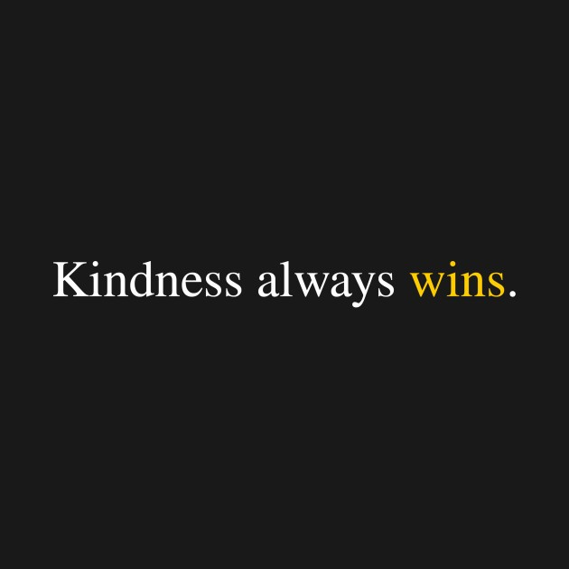

You’ve unlocked this section by speaking with kindness. Words are powerful tools, and the path you chose to get here demonstrates a fundamental truth about human connection.

Kind words do more than just make someone feel good for a moment. They build resilience, foster trust, and heal internal emotional wounds. A simple, genuine compliment or an encouraging word can change the trajectory of someone's day—or even their life.

Conversely, bad, rude, or hateful words do immense, measurable harm. They generate fear and anxiety, destroy trust, and trigger stress responses in the body that reduce problem-solving ability. Bad words create an environment where collaboration is impossible and lasting emotional scars are formed. The impact of a negative word often lasts long after it was spoken.
Choosing kindness is not a weakness; it is a sign of immense strength and self-control. It is the choice to use your influence to uplift, not tear down. Your words shape your world.